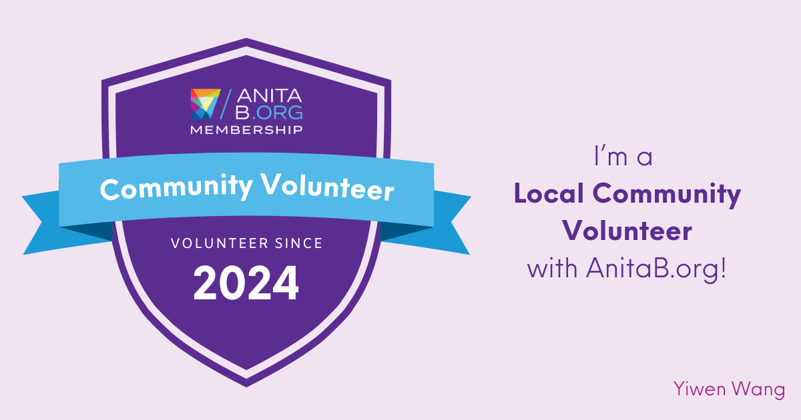
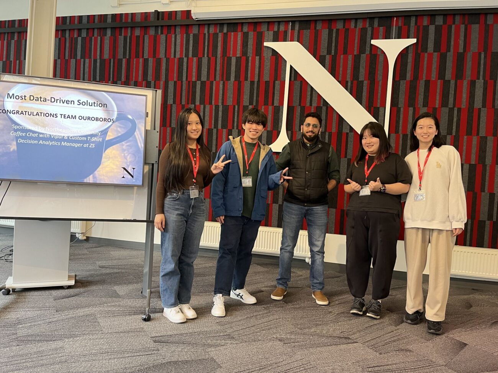
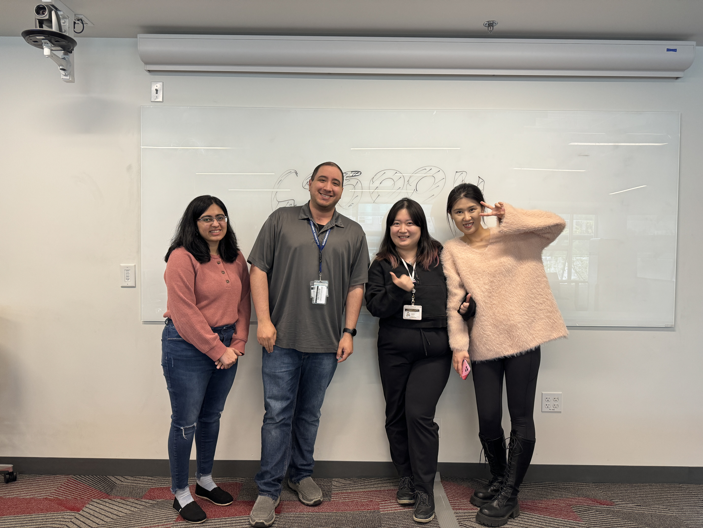

Experience
Here you will find a detailed account of my diverse professional journey.
Incoming Software Development Intern
Amazon, Seattle, US
May 2025 - Aug 2025
Responsibilities:
- Awaiting Team Assignments
Software Engineer Intern
Veelong Corporation, Remote, US
Aug 2024 - Dec 2024
Responsibilities:
- Developed and optimized web interfaces for displaying collateral debt position (CDP) data from the SUI blockchain with RUST and MOVE; Collaborating in the full software development lifecycle with the team.
College Loop President
Girls Who Code, Seattle, US
Sep 2024 - present
Responsibilities:
- College Loop President at Northeastern University Seattle Campus
- Promoting community sisterhood by hosting tech events

Software Engineer Intern
Uplift Northwest, Seattle, US
June 2024 - Aug 2024
Responsibilities:
- Developed data input system and produced visualizations to provide actionable business insights; Collaborated with a cross-functional team to implement a scalable and efficient full-stack web application using JavaScript, my design of the input system increased data processing speed by 25% while ensuring scalability and user-friendliness.

AnitaB (GHC) Local Community Volunteer
AnitaB, Seattle, US
June 2024 - present
Responsibilities:
- Volunteered at AnitaB Seattle local community, demonstrating commitment to tech community engagement.
- Networked with professionals, staying informed of the latest trends and best practices in technology.

2024 Needle in a Hack-Stack Hackathon Top 3 Team & Most Data-driven Solution
Northeastern University & City of Seattle, Seattle, US
Feb 2024
Responsibilities:
- Led and Developed a a solution to the emission reducing problem in the Seattle City
- Top 3 Team & Most Data-driven Solution.

President, Founder and Software Engineer
Tech@Crossroads, Northeastern University – Seattle, US
Fall 2023 - present
Responsibilities:
- Founder
- President
- Leading the student project development
- Hosting events and LeetCode Groups
- Engaging with students, faculty, and administration
Achievements:
- Most orgnized and active student organization on campus with about 300 members
- Student-led project development with campus recognition
- Hosting LeetCode Practice Sessions

Object-oriented Programming Course Teaching Assistant
Northeastern University, Seattle, US
Spring 2024, Summer 2024
Responsibilities:
- Led the labs by teaching and answering OOD problems
- Helped students with their projects and assignments
- Graded students' assignments
- Hosted office hours
- Assisted the professor with the course

Software Engineer Intern
Zhejiang Golden Webking Co., Ltd. – Remote, China
Summer 2023
Responsibilities:
- Software development
Achievements:
- Developed a loyalty program management system using Java and Spring Boot, enhanced customer engagement by 30%.
- Seamlessly integrated the system with the e-commerce platform, using RESTful APIs and Hibernate to track customer purchases, allocate points, and facilitate reward redemption during checkout.

Assistant Lawyer
Allbright Law Office, Shanghai, China
Jul - Dec 2013
Responsibilities:
- Legal documents drafting, contract draft and management, contract translation, case preparations, evidence preparations
Achievements:
- Drafted 1 common knowledge book
- Drafted over 20 international business contracts
- Won over 10 cases

Legal Intern Lead
Eaton Investment China Ltd., Shanghai, China
Dec 2011 - Jun 2012
Responsibilities:
- Reviewed and advised over 100 sales contracts from Asia-Pacific with a sales team to control risks and to sign the contracts.
- Led and trained the new interns and had been given a high evaluation by the manager.
Achievements:
- Worked with sales team and sccuessfuly negotiated over 20 international contracts
- Trained 4 interns